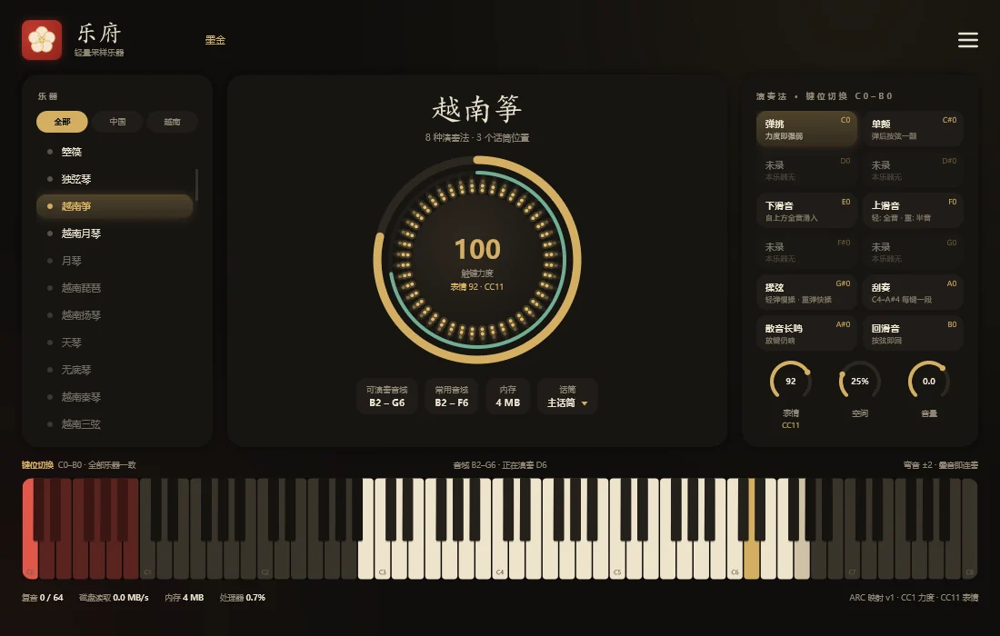
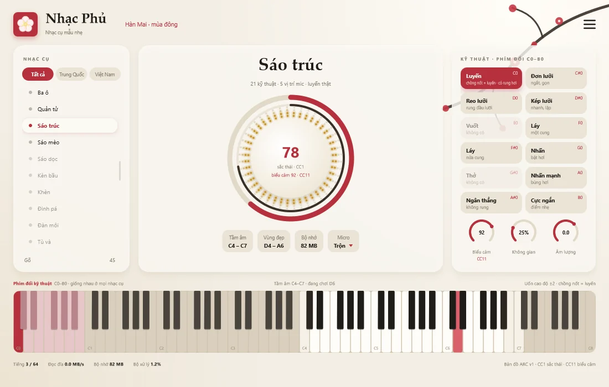
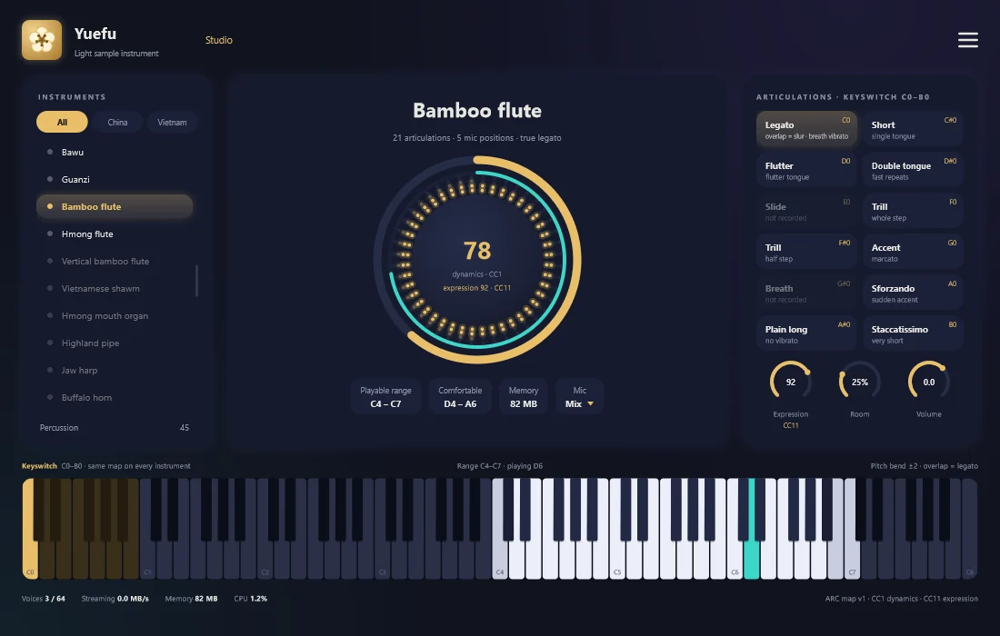
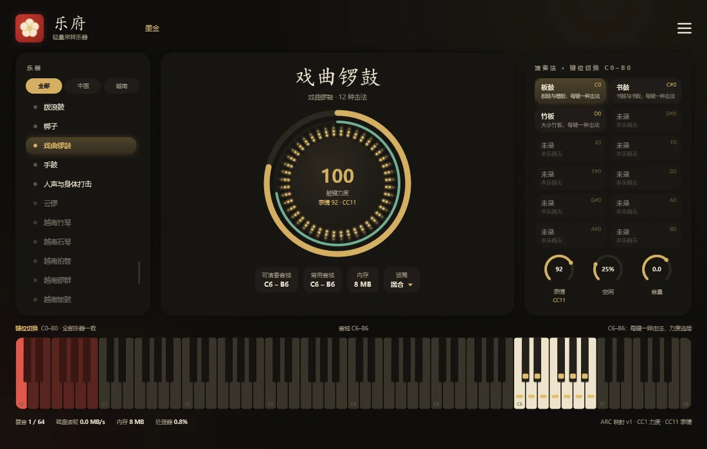

AuraLink Studio / 乐府
中国与越南的民族乐器 —
尽在一个插件。
六十件乐器，从古筝、琵琶、二胡、洞箫，到越南筝、独弦琴、越南竹笛，还有成套的鼓、锣、钹。用普通的音符写下旋律，听起来就像真人在演奏：连音、滑音、颤音、轮指和琴弦的余音都已在乐器之中。
价格暂未定价

与众不同之处
一个插件，一整支民族乐队。
所有乐器共用一套简洁的控制和同一种演奏方式，从二胡换到笛子、从古筝换到越南筝，都无需重新学习。
- 60 件乐器，四大类12 件弹拨与击弦乐器、6 件拉弦乐器、13 件吹管乐器和 29 件打击乐器。在列表中选择，可按中国或越南筛选。
- 一套键位切换C0–B0 十二个键在每件乐器上选择演奏法，同一类技法总在同一个键上：为二胡写的声部，换到高胡或笛子上照样能演奏。
- 真实连奏，准在拍上两个音叠在一起就以连音或滑音相连。乐府会稍稍预读，让连音在回放时准确落在拍上；实时演奏时关闭预读，乐器即刻响应。
- 用 CC1 控制强弱拉弦与吹管乐器的音量和音色随 CC1 变化，就像演奏者的弓与气息。CC2 和 CC21 调节颤音的深度与速度，CC5 调节滑音的时间。
- 内存占用少，最多五个话筒录音留在硬盘上，内存中只保留每个声音的开头：一件乐器只占几兆到几十兆内存。可选混合、近距、主话筒、顶置或房间。
- 一个实例十六个声部多声部模式下，一个乐府最多容纳 16 件乐器，各用一个 MIDI 通道，就像一个插件里的小乐队。
越南乐器
越南筝、独弦琴、越南月琴、越南竹笛、苗族竹笛 — 还有更多。
1.0 版已收录五件越南乐器。越南竹笛是乐府中最完整的音色库，有五个话筒位置和音与音之间实录的连音。更多越南乐器正在制作中：列表中仍显示为灰色的名字就是接下来的内容。

三种界面，三种语言
每种语言一种界面。
中文、英文或越南文，一次只显示一种语言。界面随语言切换，也可以在菜单中自选。


打击乐器
每个键一种击法。
鼓、锣、钹、木鱼和戏曲锣鼓。键位图直接显示在键盘上；力度就是击打的强弱，在许多键上，力度 127 是另一种击法，例如滚奏或双击。每一类都有自己的键区，因此可以在同一通道上叠加。
